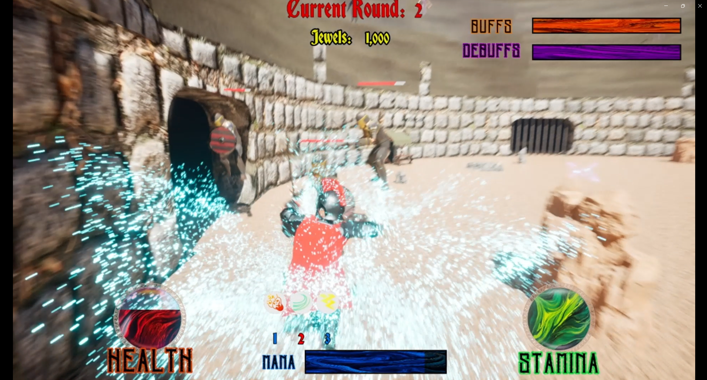

This demo showcases the Berserker's relentless aggression, the Warrior's tactical defense, and the Cleric's supportive healing behaviors all working in harmony to create challenging combat encounters.
My Development Journey
Creating Blood and Sand's AI combat system was about solving a core challenge: How do you make AI enemies that feel intelligent, varied, and fun to fight? My approach focused on giving each enemy archetype a distinct personality through their combat behaviors, creating a rock-paper-scissors dynamic that keeps players engaged.
My Core Design Philosophy
Distinct Personalities
Each enemy needed to feel like a different opponent, not just a stat variation
Tactical Variety
Players should need different strategies for each enemy type
Group Dynamics
Enemies should complement each other when fighting together
Emotional Impact
Combat should feel visceral, strategic, and rewarding
The 3.5km combat arena where all AI behaviors come together

Multi-enemy Encounter
Tactical Positioning

Dynamic Combat Flow

Player Character